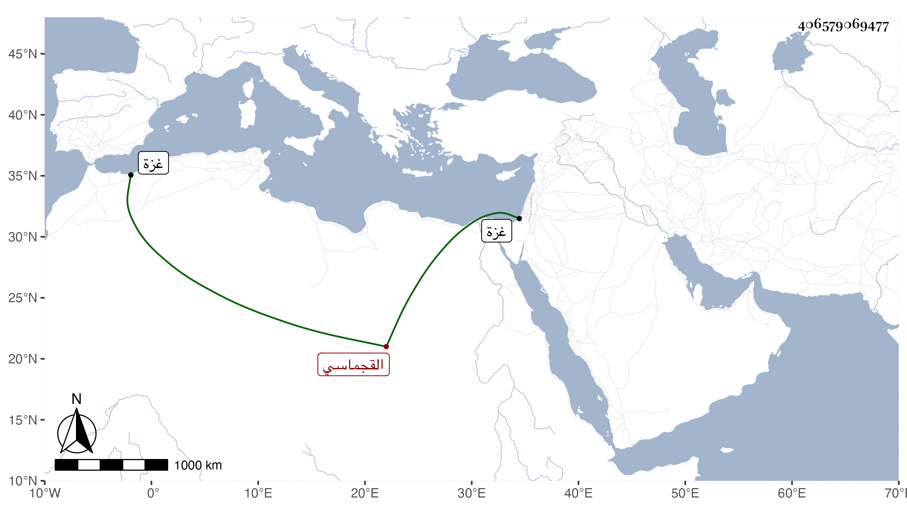

0902Sakhawi.DawLamic.ITO20230111-ara1.EIS1600.406579069477
Biography ID: 406579069477
1005
أقبدي القجماسي قجماس ابن عم الظاهر برقوق . تنقل حتى ناب بغزة في الأيام الأشرفية بمال فباشرها قليلا ومات في العشر الأوسط من شوال وقيل ذي القعدة سنة إحدى وأربعين بمخيمه الذي كان رام التحفظ فيه من الفناء خارج غزة وهو في عشر الثمانين ، قال المقريزي وأراح الله بموته من جوره وطمعه .
